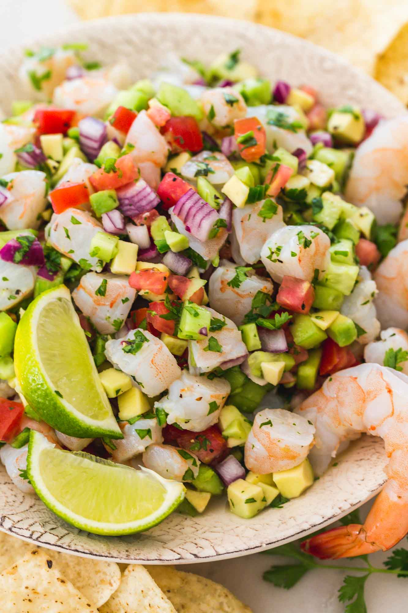

Ceviche

Description
Ceviche is a healthy Peruvian dish that is usually served as an appetizer.
Ingredients
- Shrimp
- Lemons
- Tomatoes
- Cilantro
- Red onions
- Jalapenos
- Avocado
Steps
- Chop all ingredients such as the shrimp, tomatoes, cilantro, etc.
- Mix together in a medium bowl
- Season with salt and pepper and lemon juice
- Allow food to marinate for at least 1 hour
- Serve over tortilla chips or tostadas